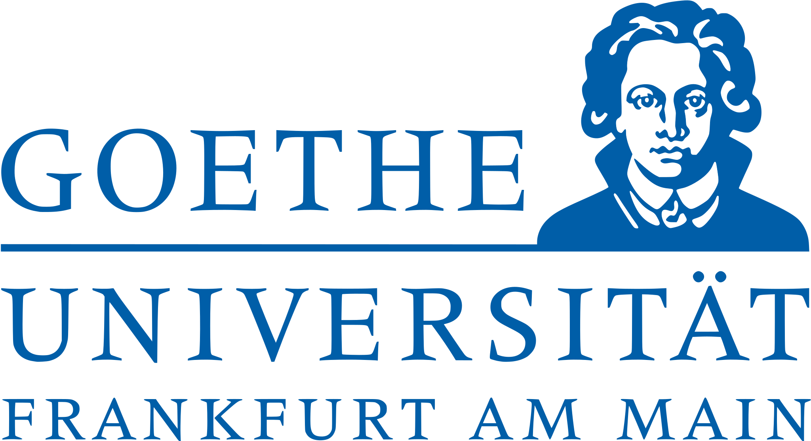

| Univerzitet Webster je privatni univerzitet sa glavnim kampusom u Webster Groves, Missouri. Ima više lokacija u Sjedinjenim Državama i zemljama širom Evrope, Azije i Afrike. Nudi dodiplomske i postdiplomske programe u različitim disciplinama, uključujući slobodne umetnosti, likovne i izvođačke umetnosti, obrazovanje nastavnika, poslovanje i menadžment. Webster je 2021. upisao 6.741 učenika. Univerzitet ima alumni mrežu od oko 170.000 diplomaca širom sveta. Koledži uključuju Koledž za humanističke i društvene nauke, Koledž za zdravstvo i nauku, Školu za biznis i tehnologiju Džordža Herberta Vokera, Školu za komunikacije i Školu za obrazovanje. Univerzitet Vebster je akreditovan od Komisije za visoko obrazovanje. Specifične programe akredituju specijalizovani akreditori, uključujući Asocijaciju univerzitetskih poslovnih škola i programa (ACBSP), Nacionalnu asocijaciju muzičkih škola (NASM), Nacionalnu ligu za medicinske sestre (NLN), Savet za akreditaciju (COA), Nacionalni savet za akreditaciju obrazovanja nastavnika (NCATE), Odeljenje za osnovno i srednje obrazovanje Misurija i Nacionalni odbor za sertifikovane savetnike.U 2022. godini, Univerzitet Vebster je rangiran na 16. među regionalnim univerzitetima (Srednji zapad) prema US Nevs & Vorld Report. |

|
Univerzitet Ca' Foscari u Veneciji je javni univerzitet u Veneciji, Italija. Od svog osnivanja 1868. godine, smešten je u venecijanskoj gotičkoj palati Ca' Foscari, po kojoj je i dobio ime. Palata se nalazi na Velikom kanalu, između Rialta i San Marka, u sestijeru Dorsoduro. Ca' Foscari je postao punopravni univerzitet 1968. Trenutno ima osam odeljenja i skoro 21.000 studenata. Ca' Foscarijeva nastava i istraživanje su usredsređeni na ekonomiju i biznis, humanističke nauke i moderne jezike. Ekonomski odsek Ca' Foscarija je 2017. godine bio rangiran kao treći najbolji u Italiji, nadmašen od Univerziteta u Bolonji i Univerziteta u Padovi, dok je generalno bio na 5. mestu od 89 univerziteta. |
|  | Gete univerzitet (nem. Johann Volfgang Goethe-Universität Frankfurt am Main) je univerzitet koji se nalazi u Frankfurtu na Majni, Nemačka. Osnovan je 1914. godine kao univerzitet za građane, što znači da su ga osnovali i finansirali bogati i aktivni liberalni građani Frankfurta. Prvobitni naziv je bio Universitat Frankfurt am Main. Godine 1932. naziv univerziteta je produžen u čast jednog od najpoznatijih rođenih sinova Frankfurta, pesnika, filozofa i pisca/dramatičara Johana Volfganga Getea. Univerzitet trenutno ima oko 45.000 studenata, raspoređenih u četiri glavna kampusa u gradu. Univerzitet je proslavio 100. godišnjicu 2014. Prva žena predsednica univerziteta, Birgita Volf, položila je zakletvu 2015. godine, a nasledio ju je Enriko Šlajf 2021. godine. 20 dobitnika Nobelove nagrade je povezano sa univerzitetom, uključujući Maksa fon Lauea i Maksa Borna. Univerzitet je takođe povezan sa 18 dobitnika nagrade Gotfrid Vilhelm Lajbnic. Gete univerzitet je deo IT klastera Rajna-Majn-Nekar. Univerzitet Johanes Gutenberg u Majncu, Gete univerzitet u Frankfurtu i Tehnički univerzitet u Darmštatu zajedno čine Univerzitete Rajna-Majna (RMU). |
| CBS International Business School je državno priznata privatna poslovna škola koja je nastala 2020. iz pojedinačnih brendova Kelnske poslovne škole (CBS) i Evropske škole za menadžment (EMS). Na svojim lokacijama u Kelnu, Majncu i Potsdamu, nudi oko 1.900 studenata svoje pretežno engleske studije poslovnog menadžmenta sa akademskim diplomama Bachelor of Arts, Bachelor of Science, Master of Arts, Master of Science i MBA. CBS Keln Business School GmbH je odgovorno telo univerziteta. Internacionalizacija univerziteta je jedan od osnovnih ciljeva CBS-a. Ovo se ne ogleda samo u međunarodnoj orijentaciji njegovih studijskih programa na engleskom jeziku, već iu širokoj međunarodnoj mreži od trenutno 130 partnerskih univerziteta širom sveta (od februara 2020. godine). CBS takođe ima Erazmus povelju za visoko obrazovanje (ECHE), što ga čini delom Erazmus+ programa koji finansira Evropska komisija. U nastavnim planovima i programima BA i BSc na engleskom jeziku, semestar u inostranstvu je integrisan kao obavezan deo programa. Semestri u inostranstvu su omogućeni kroz prozor mobilnosti u 5. semestru diplomskog kursa i završavaju se na partnerskim univerzitetima CBS-a. Stažiranje u inostranstvu takođe podržava i promoviše CBS Career Service. Studentsko telo CBS-a karakteriše visok stepen raznolikosti sa udelom od preko 20% međunarodnih studenata iz skoro 75 različitih nacija na svim studijskim kursevima. Integracija međunarodnih studenata se promoviše kroz blisku akademsku i društvenu podršku kroz konsultacije, razne događaje i kurseve nemačkog u CBS-u. |

|
Univerzitet IULM - Milano (ital. Libera Universita di Lingue e Comunicazione IULM) je univerzitet koji se nalazi u Milanu, Italija. Osnovan je 1968. godine i organizovan je u četiri fakulteta. Kampus IULM univerziteta uključuje studijski centar sa modernim nastavnim objektima. U glavnoj zgradi se nalazi recepcija, administracija učenika. kancelarije, dekanat, biblioteka i učionice. Nedavno su dograđene nove zgrade: kantina za oko 400 ljudi, zgrada namenjena za istraživački institut, auditorijum i stambeni hol. Ovo su 3 fakulteta u kojima je univerzitet podeljen na: Fakultet komunikologije, Fakultet za tumačenje i prevođenje, Fakultet umetnosti i turizma. |